Keyboard Shortcuts
Browse to a module or class using the sidebar to view its API documentation.
Press s to focus the API search box.
Use Up and Down to select classes, modules, and search results.
With the API search box or sidebar focused, use ⌘-Left or ⌘-Right to switch sidebar tabs.
With the API search box or sidebar focused, use Ctrl+Left and Ctrl+Right to switch sidebar tabs.
Index
Introduce to G2N Framework
Gear2Net Framework는 Gear2용 Application 개발자를 위한 개발 Framework입니다. Gear2Net Framework는 대략적으로 다음과 같은 기능을 제공합니다.
- 모바일 제어 : 배터리 상태를 조사하거나, 진동을 제어하고 센서값을 읽어오는 등 스마트폰 자체를 제어
- 네트워크 사용 : Http통신을 통해 원하는 자료를 가져오거나 TCP/UDP로 실시간 통신 지원
- 유틸 기능 : 스마트폰에서 텍스트 입력을 전달받거나 원하는 웹 페이지를 스마트폰에 표시할 수 있는 기능
Gear2 Application을 개발할 때 위와 같은 기능을 추가하려면 Android App 제작 기술도 필요했습니다.
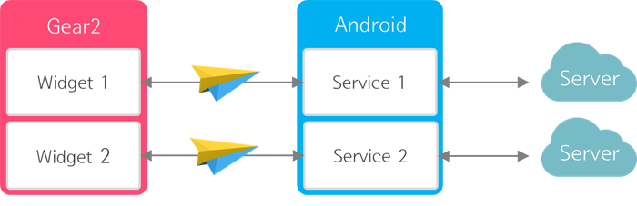
[기존의 Gear2 Application]
위 그림처럼 Gear2의 Application 하나마다 Android의 Service 한 개 이상을 구현해야 합니다.
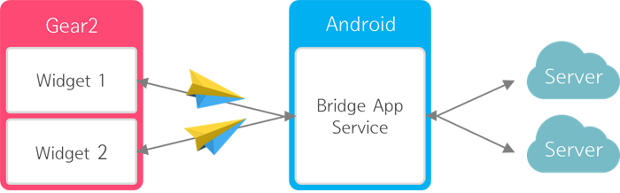
[Gear2Net Framework Application]
Gear2Net을 사용하면 Framework에서 제공하는 BridgeApp 하나만으로 여러개의 다양한 Gear2 Application의 지원이 가능합니다. 개발자는 더 이상 Android Service를 개발할 필요가 없어진 것입니다.
[Web Skill만으로 원하는 Gear2 Application 작성 가능]
이제 Web Application 제작자도 Android 개발에 대한 부담 없이 마음껏 Gear2 Application을 만들 수 있습니다!
Gear2 사용자는 스마트폰에 BridgeApp(추후 정식 마켓에 등록 예정)만을 설치하면 Gear2Net Framework를 사용해서 개발한 모든 Gear2 application의 사용이 가능합니다.
Gear2Net의 전체적인 구성도는 크게 API와 Framework의 두 부분으로 이루어져 있습니다.

[System Architecture]
Gear2 Application 개발자는 API를 사용해서 개발하게 되며, API는 구성도는 아래 그림과 같습니다.
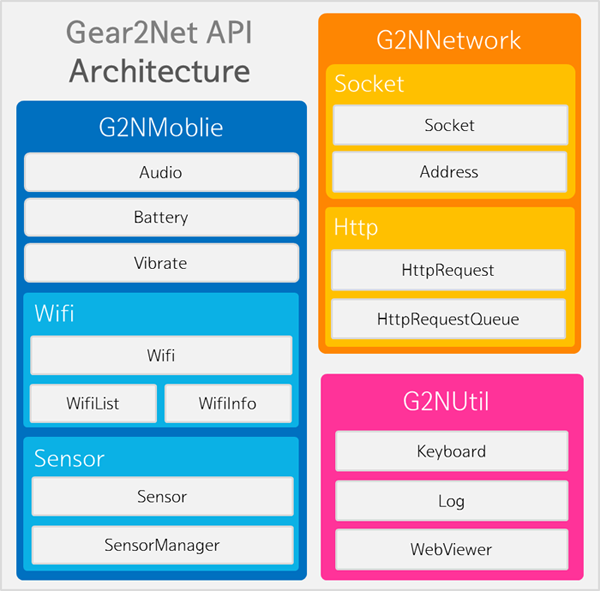
[API Architecture]
각 부분에 대한 자세한 설명은 왼쪽의 API Reference를 참고하시기 바랍니다.
Getting Start
이 섹션에서는 Gear2Net Framework를 사용하여 Gear2용 Application 개발을 시작하는 방법을 Step by Step으로 소개합니다.
-
다운로드
https://github.com/mysticPrg/G2N/releases/download/template/Gear2NetTemplate.zip
위 주소에서 Gear2NetTemplate.zip 파일을 다운받습니다. 이 파일은 Gear2Net Framework의 기본 템플릿 파일입니다.
-
압축 해제
C:/tizen-wearable-sdk-data/ide/user-templates/web/
위 경로에 다운받은 파일의 압축을 해제합니다. 이 위치는 사용자 정의 템플릿을 지정하는 경로입니다.
-
프로젝트 생성
Wizen IDE for Wearable을 실행한 후 [File] - [New] - [Tizen Wearable Web Project]를 선택하면 아래와 같은 창이 나타납니다.
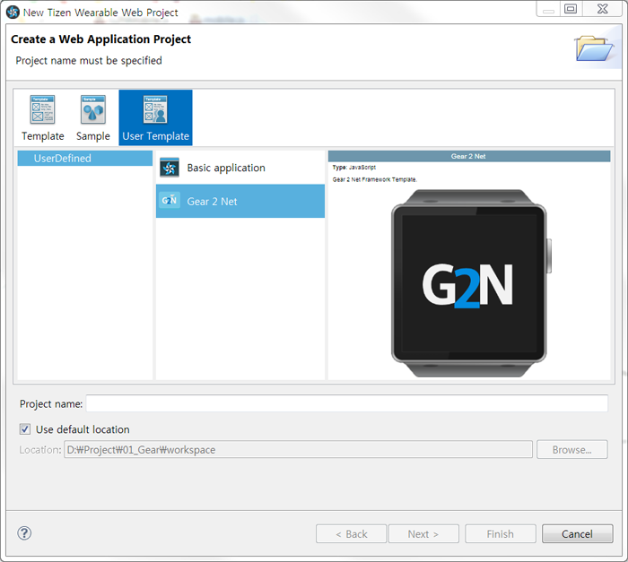
[Gear2Net Template을 추가한 모습]화면에 보이는 것처럼 [User Template]에서 [UserDefined]에 위치한 [Gear 2 Net]을 선택한 후, Project name을 입력하고 [Finish]를 클릭합니다.
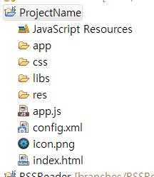
[생성된 Project][Project Explorer] 탭에서 프로젝트가 제대로 생성된 모습을 확인할 수 있습니다.
-
프로그램 작성
위의 과정을 거치면 Gear2Net Framework로 Application을 작성하기 위한 준비가 모두 끝났습니다. 실제로 프로그램을 작성하기 위해 알아야 할 주요 파일은 다음과 같습니다.
index.html - Application의 화면 구조를 정의css/style.css - Application의 모양을 정의app/main.js - Application의 시작점config.xml - Application의 이름 등 설정을 저장
-
main.js 파일을 작성하기 전에
Gear2Net은 RequierJS를 사용해서 모듈화 되어있습니다. RequireJS에 대한 자세한 내용과 사용법은
에서 확인할 수 있습니다.
JavaScript에서 Dom객체에 대한 접근 및 다양한 편의 기능을 제공하는 jQuery를 사용하는 방법에 대한 안내는
를 참조하기 바랍니다.
Gear2Net은 Tizen Web App UI Library인 tau를 사용합니다. 해당 Library에 대한 내용은
Tizen IDE for Wearable의 [Help] - [Help Contents] - [Tizen Wearable Web App Programming] - [API References] - [UI Framework Reference]
를 통해 안내받을 수 있습니다.
이 밖에도 [Help Contents]의 다른 내용들을 살펴보는 것이 Gear2 Application을 작성하는 데 있어 많은 도움이 될 것입니다.
Life Cycle
Gear2의 Web App에서는 Application의 상태 변화를 핸들링 할 수 있는 함수를 제공하지 않습니다. 하지만 Application을 작성하다 보면 이러한 상태에 따라 다른 동작을 해야 하는 경우가 있습니다. Gear2Net Framework에서는 이를 위해 LifeCycle 모듈을 구현해서 제공합니다.
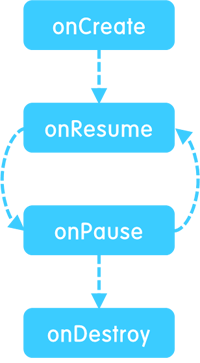
[LifeCycle]
Gear2Net Framework 에서는 내부적으로 onCreate, onResume, onPause, onDestroy 상태를 정의하고 이에 따른 적절한 처리를 수행하고 있습니다. Framework를 사용하는 개발자는 이 중 onResume, onPause 상태에 실행될 함수를 정의할 수 있습니다.
onCreate는 Application이 처음 실행될 때를 의미하고, onDestroy는 Application이 종료될때는 나타냅니다. onResume과 onPause는 Application 형태에 따라 달라집니다.
일반 Application은 Gear2 사용자가 홈 버튼을 눌러서 Application을 잠시 비활성화 시키거나, 알림 등으로 인해 화면이 가려진 경우 onPause 상태로 전환됩니다. onPause상태인 Application은 화면에 다시 표시될 때 다시 onResume 상태로 전환됩니다.
시계 Application은 화면에서 가려지더라도 onPause 상태로 전환되지 않습니다. 오직 Android 기기와의 Bluetooth 연결이 끊겼을 때 onPause 상태로 전환됩니다. onPause 상태인 Application은 Gear2 기기의 화면이 다시 켜질 때마다 재접속을 시도하며 재접속이 성공하면 onResume 상태로 전환됩니다.
onResume, onPause를 핸들링해서 사용자 정의 함수를 호출하려면 먼저 G2NLifeCycle 모듈을 로드해야 합니다. 단순히 require 구문에 G2NLifeCycle을 추가해 주기만 하면 됩니다.
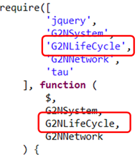
[G2NLifeCycle 모듈 추가]
G2NLifeCycle 모듈을 추가하면 setOnResumeCallback, setOnPauseCallback 함수를 이용해서 사용자 정의 함수를 등록할 수 있습니다.
G2NLifeCycle.setOnResumeCallback(function() {
tau.changePage('#page_index');
isConnected = true;
});
G2NLifeCycle.setOnPauseCallback(function() {
tau.changePage('#page_disconnect');
isConnected = false;
});
주의해야 할 점은, BridgeApp 과의 연결을 정상적으로 끊고 앱을 종료하기 위해서는 Tizen 기본 API에서 제공하는 exit 함수를 사용하면 안된다는 것입니다. 이를 위해 G2NLifeCycle 모듈은 자체적으로 exit 함수를 제공합니다.
G2NLifeCycle.exit();
Gear2Net Framework 사용 Application은 반드시 위의 함수를 사용해서 종료해야 정상적으로 종료할 수 있습니다.
Callback And Listener
Gear2Net Framework 에서는 두 가지 형태의 Callback 함수가 존재합니다. 이를 구분하기 위해 각각 Listener, Callback이라고 이름붙이고 서로 다른 용도로 사용됩니다.
-
Callback 함수의 개념
일반적으로 Callback 함수란 사용자가 스스로 호출하는 것이 아닌 특정 시점에 시스템에서 호출하는 함수를 말합니다. jquery의 이벤트 함수인 click을 예로 들면, 사용자가 해당 부분을 click했을 때 실행될 callback 함수를 등록하는 기능을 제공합니다.
-
Callback 함수
Gear2Net은 이러한 일반적인 callback을 두 가지로 분류했습니다. Gear2Net에서는 모든 함수가 BridgeApp과의 통신을 포함하고 있기 때문에 통신이 잘 됐고 원하는 함수가 제대로 실행됐는지 확인하기 위해 callback 함수가 필요합니다.
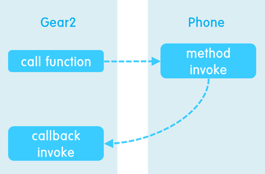
[Gear2Net의 Callback 함수]따라서 함수를 한번 실행하면 그 결과로 한 번의 callback 함수가 호출됩니다. 한번 실행에 한번 호출. callback의 핵심 키워드입니다. Gear2Net API는 모든 함수의 마지막 매개변수로 callback 함수를 전달받을 수 있도록 설계되었습니다. callback 함수를 사용함으로써 함수의 실행 완료 시기를 알 수 있게 됩니다.
Gear2Net의 API는 JavaScript 형태로 제공되기 때문에 callback 함수 역시 JavaScript의 함수입니다.
function showAudioResult(returnValue) { console.log(returnValue); } G2NMobile.Audio.getAudioMode(showAudioResult);위와 같이 단순하게 함수명만 넘겨주면 해당 함수가 실행된 결과를 callback함수를 통해 받아올 수 있습니다.
G2NMobile.Audio.getAudioMode(function(reutnrValue) { console.log(returnValue); });물론 위와 같이 무명함수로도 사용이 가능합니다.
-
Listener 함수
Callback과는 다르게, 한번 특정 이벤트 리스너를 등록해 놓으면 해당 이벤트가 발생할 때 마다 반복해서 호출되는 Callback 함수를 Gear2Net의 Listener라고 명명했습니다. Listener를 사용하는 절차는 다음과 같습니다.
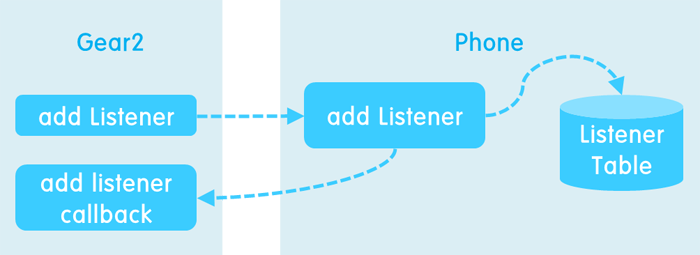
[Listener 함수 추가]먼저 Listener를 추가하는 함수를 호출하면, Phone에 있는 BridgeApp에서는 해당 Listener를 ListenerTable에 등록한 후 Listener 추가 완료 Message를 Gear2에 돌려줍니다.

[Listener 함수 호출]이렇게 한 번 등록한 Listener는 해당 event가 발생할 때 마다 Gear2에 message를 전달해 줍니다. Event는 센서 값이 변화하거나 Socket통신에서 data를 수신하는 등 다양한 경우가 있을 수 있습니다. 이렇게 임의의 시간에 어떤 event가 발생하는 것을 핸들링 할 필요가 있는 module은 전부 listener를 add하거나 remove할 수 있는 함수를 가지고 있습니다.
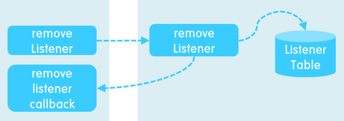
[Listener 함수 제거]더 이상 listener가 필요하지 않을 때 remove listener 함수를 사용해서 해당 listener를 listener table에서 제거할 수 있습니다.
위와 같은 상황의 한 예로 phone의 Battery 충전량이 바뀔 때 Gear2의 화면에 표시하고 싶다면 다음과 같은 절차를 거치면 됩니다.
var listenerKey = null; // LisnterKey를 저장할 변수 (remove에 사용됨) function showBatteryListener(returnValue) { // Listner 함수 $(‘#resultDiv’).text(returnValue[0]); } G2NMobile.Battery.addBatteryChangedListener(showBatteryListener, function(key) { listenerKey = key; });위와 같이 작성하면 Battery의 충전량이 변화할 때 마다 showBatteryListener 함수가 호출됩니다. 모든 listener는 한 개의 매개변수만을 전달받는데, event에 따라 여러 개의 전달값이 필요할 수도 있기 때문에 배열의 형태로 전달됩니다. 매개변수가 한 개 일때도 배열로 받기 때문에 returnValue[0] 과 같이 작성하여야 정확한 type의 값을 전달받을 수 있습니다.
등록한 listener를 제거하고 싶을 때에는 다음과 같이 작성할 수 있습니다.
G2NMobile.Battery.removeBatteryChangedListener(listenerKey , function() { listenerKey = null; });listener를 제거하기 위해서 listener key가 필요하므로 addBatteryChangedListener의 callback 함수가 전달받는 listener key를 꼭 저장해 두어야 합니다.
Exception
예외 상황이 발생하면 BridgeApp에서 Exception message를 Gear2에게 전송합니다.
Gear2에서는 예외 message를 표시하고 난 후 application을 종료시킵니다. BridgeApp에서는 해당 Application이 사용하던 자원을 할당할 수 있도록 스레드를 정리하고 변수들의 레퍼런스를 끊는 정리 작업을 수행합니다.
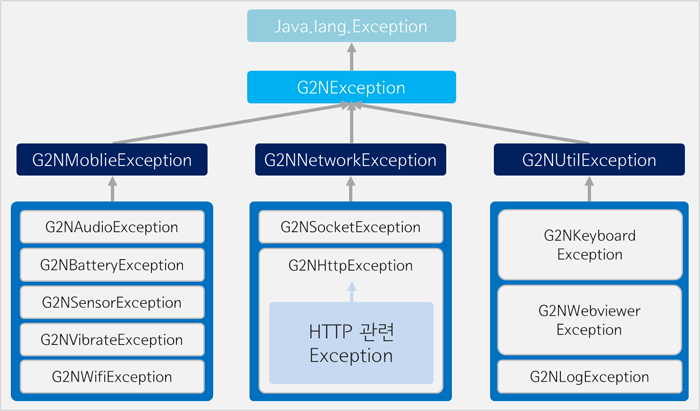
[Exception 계층 구조]
현재 Gear2Net에서 발생하는 Exception은 위 그림과 같은 계층 구조를 가지고 있습니다.
Static Class And Non-Static Class
Gear2Net Framework에서 API를 제공하는 class들은 크게 두 가지 종류로 분류할 수 있습니다. Static과 Non-Static class입니다.
스마트폰의 진동 모듈처럼 개념적으로 혹은 실제로 한 개밖에 존재하지 않는 부분은 static class를 통해서 접근 가능하며,
Socket과 같이 여러 개가 존재할 수 있는 부분은 non-static class로 작성되었습니다. static class들은 내부적으로 singleton pattern을 사용해서 구현하였습니다.
두 class의 차이점을 예제를 통해 살펴보면 아래와 같습니다.
-
Static Class
Static class의 예로 vibrate class의 playVibrate함수는 다음과 같이 사용할 수 있습니다.
G2NMobile.Vibrate.playVibrate(1000);이 코드를 실행하면 Gear2와 연결된 스마트폰이 1초 동안 진동합니다. 스마트폰의 진동 모듈은 하나밖에 존재하지 않기 때문에 playVibrate는 전역 함수로써 존재하며, 객체를 생성하지 않고도 함수 호출이 가능합니다.
-
Non-static Class
Non-static class의 예로 Address class를 들 수 있습니다. Address 객체는 한 개의 application 안에 여러 개 존재할 수 있으므로 non-static class로 작성하였습니다.
var address = new G2NNetwork.Socket.Address(‘192.168.0.1’, 3000, function() { // address 객체 사용 });위 코드를 실행하면 192.168.0.1:3000을 의미하는 address 객체가 생성됩니다. 생성자 매개변수의 마지막에 callback 함수를 전달하지 않아도 정상적으로 생성은 되지만, 객체가 확실히 생성된 후 address 객체를 사용하고 싶다면 callback 함수 내에서 사용해야 합니다.
Non-static class의 또 다른 예로 Sensor class를 꼽을 수 있습니다. Sensor class는 생성자가 존재하지 않고 SensorManager를 통해 얻어오기만 할 수 있습니다.
var sensor = null; G2NMobile.Sensor.SensorManager.gerSensor(G2NMobile.Sensor.SensorType.LIGHT, function(obj) { sensor = obj; });이 코드를 실행하면 스마트폰의 조명 센서에 해당하는 객체를 얻어올 수 있습니다.
모든 Non-static 객체는 소멸자 함수를 가지고 있습니다. 사용이 끝난 객체는 반드시 destruct 함수를 호출해 주어야 정상적으로 메모리 반환이 가능합니다.
Sample Applications
여기에 소개하는 Sample Applcation은 Gear2Net Framework를 사용해서 만드는 Application의 예제입니다. 실 사용을 위해 만든 것이 아니므로 다양한 예외처리 등등은 넣지 않고 기능 구현 부분에 집중할 수 있도록 하였습니다.
-
RSS Reader
소스 다운로드 - https://github.com/mysticPrg/G2N/releases/download/sample/RSSReader.zip
RSS Reader는 Gear2Net의 다음과 같은 기능을 사용합니다.
HTTP 통신
Web Viewer
Keyboard
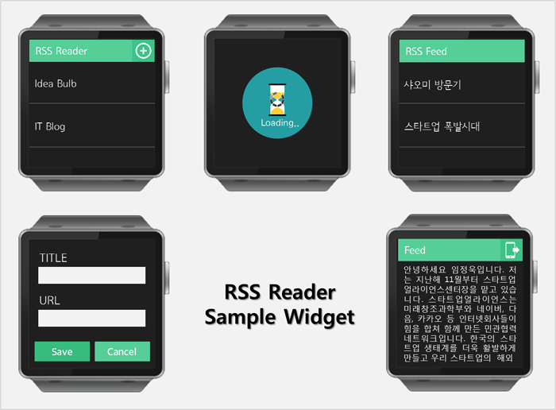
[RSS Reader]RSS Reader widget은 신문사나, 블로그의 Feed를 추가하면 뉴스나 글을 알려주듯이 어떤 RSS Feeder의 글을 알려주는 widget입니다. widget을 처음 실행하면 스마트폰과의 연결이 이루어지는데 연결하는 동안에는 어떤 통신도 할 수 없으므로 연결이 되지 않았을 때의 사용자 입력을 막기 위해 G2NLifecycle의 Callback함수를 이용하여 Loading화면을 구현하였습니다.
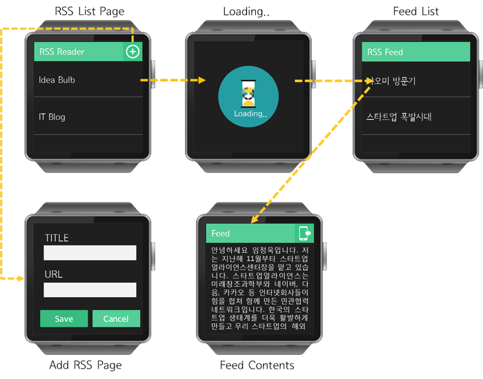
[RSS Reader Flow]RSS Reader에서 Feed는 [+]버튼을 눌러 RSS의 제목과 URL을 입력하여 추가할 수 있습니다. 하지만 기어에서는 입력할 수 있는 키보드가 지원되지 않기 때문에 G2NUtil의 G2NKeyboard를 이용하여 입력을 받습니다. 기어의 입력창을 터치하면 스마트폰에 입력창이 나타나고 그 곳에 입력을 하게 되면 기어에 입력한 글이 전송됩니다. 이렇게 제목과 URL을 입력하고 저장을 하게 되면 RSS리스트에는 새로운 RSS가 추가됩니다.
읽고 싶은 RSS를 클릭하면 Feed(해당 URL의 글) 리스트가 나타나는데 FeedList는 G2NNetwork의 HTTP 통신을 이용하여 XML 데이터를 받아오고 받아온 데이터를xml2json을 이용하여 JSON 객체를 생성합니다.
JSON 객체에는 해당 URL의 Item(글)들과 Item의 제목, Item의 내용, Item의 원문 링크를 저장하여 Feed의 원문보기 버튼을 누르면 JSON에 저장 되어있는 링크와 G2NUtil의 G2NWebViewer를 사용해서 페어링 된 모바일기기에 원문 페이지를 나타냅니다.
-
Media Controller
소스 다운로드 - https://github.com/mysticPrg/G2N/releases/download/sample/MediaController.zip
Media Controller는 Gear2Net의 다음과 같은 기능을 사용합니다.
TCP Socket 통신
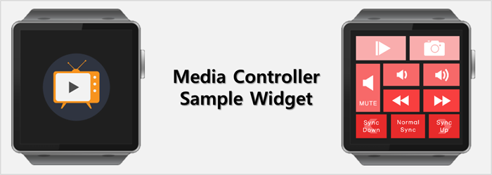
[Media Controller]Media Controller widget은 PC에 서버를 두고 해당 서버에 접근하는 소켓 통신을 보여주기 위한 widget입니다. 이 widget에서는 PC서버에 접속하여 PC에서 플레이되고 있는 동영상 플레이어를 제어할 수 있는 widget이며 기본적으로 TCP통신을 이용해서 서버와 통신 대상 Media Controller 다음 팟 플레이어만으로 구현하였습니다.
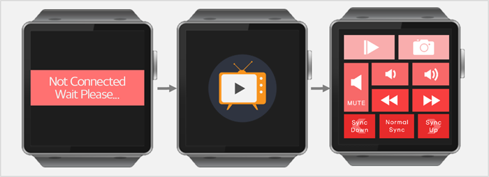
[Media Controller Flow]Media Controller widget에는 재생/일시정지, 화면캡쳐, 음소거, 볼륨조절, 빨리감기, 되감기, 자막의 싱크를 조절할 수 있는 버튼이 있습니다. 처음 Media Controller widget을 실행 시키면 RSS Reader와 마찬가지로 모바일 기기 연결에 대한 지연이 발생하므로 G2NLifecyle의 Callback함수를 사용하여 Not Connected 화면을 띄워주고 모바일 기기와 연결이 되면 소켓 연결을 시작하기 위한 버튼이 있는 화면이 나타납니다.
-
Watch Application
소스 다운로드 - https://github.com/mysticPrg/G2N/releases/download/sample/Watch.zip
Watch Application는 Gear2Net의 다음과 같은 기능을 사용합니다.
HTTP 통신
Battery
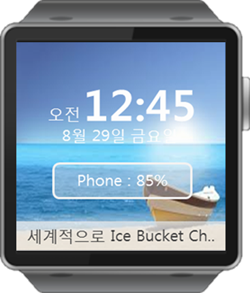
[Watch]시계 widget은 Gear의 화면이 켜졌을 때 제일 먼저 나오는 시계화면을 Gear2Net Framework를 이용해 만든 예제입니다. 기상청으로부터 날씨에 대한 데이터를 얻어서 날씨에 맞는 배경화면을 띄워주고 핸드폰의 배터리를 표시해 주는 기능을 가진 시계입니다. 이렇게 날씨와 배터리 뿐만 아니라 뉴스의 헤드라인도 시계 밑에 한 줄로 출력해 줍니다.
날씨는 기상청에서 제공하는 RSS 주소인 http://www.kma.go.kr/wid/queryDFSRSS.jsp?zone=1144060000 을 사용하여 RSS Reader Widget과 같은 방법으로 날씨 정보를 가져옵니다. 이 위젯은 API 사용 예제이므로 서울특별시 마포구 대흥동의 날씨정보만을 제공합니다.
배터리 잔량은 G2NMobile의 G2NBattery를 통해서 손쉽게 안드로이드의 남은 배터리 잔량을 얻어 올 수 있고 배터리의 잔량을 가져오기 위해 Battery의 Listener를 추가해서 이벤트가 발생하면 기어에서의 Callback함수가 호출되도록 구현하였습니다.
뉴스를 표시하는 부분은 https://news.google.co.kr/news/feeds?pz=1&cf=all&ned=kr&hl=ko&output=rss 에서 전체기사를 받아오고 기사의 제목들을 하나의 문자열에 모두 붙여서 시계 밑 부분에 스크롤 되도록 출력합니다.